NAVI — the financial wellness benefit that finds you in Slack.
An AI financial advisor built for enterprise employees. Not a separate app. A benefit that shows up inside the tools people already use every day.
Usability study, 8 participants, simulated tasks — a directional signal, not a production A/B result.
87% of employees report financial stress. Adoption of the tools meant to help is under 5%.
Companies pour money into financial wellness benefits. The programs exist. The tools exist. But employees don't use them, because the tools are built wrong.
They're designed like banking apps: clinical interfaces, data-heavy dashboards, cold blues. They make the anxiety worse instead of easing it. People enroll, open the app once, and never come back. The benefit itself isn't the problem. Where it lives is.
"We offer a financial wellness program. Maybe 3% of employees actually use it."
HR Manager · Mid-size tech company"I know I should budget, but it feels like homework. If it just told me when something was wrong, I'd actually pay attention."
Employee · User interview19 interviews. One finding that changed the whole product.
I talked to 7 HR managers and 12 individual employees across two mid-sized tech companies. I wanted to know why adoption was so low, and whether the problem was the product itself or the surface it lived on.
People don't open finance apps
Every employee I talked to already had a finance tool: Mint, their bank app, a budget spreadsheet. None of them opened it regularly. Nine of twelve said some version of "I live in Slack."
Embarrassment blocks activation
HR managers told me that branding something "financial wellness" makes people avoid it. Nobody wants coworkers knowing they signed up. An embedded tool sidesteps that: nothing to download, nothing visible.
Proactive beats reactive
Over and over, people said they wanted to be told when something needed attention, not to go looking for it themselves. "If it just pinged me when I was off track, I'd trust it more than any dashboard."
The Pivot
I started out designing a standalone financial wellness app. After the interviews, it was obvious that was wrong: people don't open finance apps, they open Slack, their payroll portal, HR dashboards. So NAVI became an embedded AI agent that shows up where attention already lives. Not an app. A benefit that finds you.
Honestly, the pivot wasn't a clean whiteboard moment. I had three weeks of standalone-app work already done: a full IA map, a navigation model, early screens I liked. Interview nine is where it stopped being deniable. An employee said "I live in Slack" almost word-for-word like the three before her, and I remember thinking my information architecture was an answer to a question nobody had asked. I kept the research, kept two screens, and threw away the rest. It stung for about a day. Then the design got dramatically easier, because "what can survive inside Slack?" is a much sharper question than "what should a finance app have?"
Six decisions that define the product.
Every decision was either provable from the research or forced by the embedded constraint. Nothing decorative.
Claymorphism, not flat UI
My first visual pass was a dark, sharp fintech UI. It looked credible to me, but the first two test participants both called it "another bank app" unprompted. That reaction is exactly the avoidance the research warned about, so I threw the pass out. Soft 3D dome shadows, rounded clay surfaces, and sky-blue backgrounds create the "best friend who happens to know finance" register instead, and this became the single biggest driver of trust scores in testing.
"NAVI ANALYSIS," not "NAVI says"
Version one used chat bubbles with a friendly "NAVI says…" voice. In a workplace benefit it read as a toy, and one participant asked if it was "like a customer service bot." That comment killed the pattern. Every AI output became a labeled "NAVI ANALYSIS" block with a confidence percentage and a data source citation: system credibility, not personality. Testing participants described the rework as feeling "like a report from a trusted system."
Human override on every card
NAVI never acts. It proposes and waits. Every recommendation card has an Override button, a non-negotiable design rule. Financial anxiety peaks when people feel out of control. The override button is a design promise: the human is always in charge. Removing it in one test iteration caused a measurable drop in trust ratings.
13-month plan, not 12
When NAVI builds a savings plan, it recommends 13 months over the aspirational 12. My bet: a clean 12-month plan reads like a New Year's resolution, and those have a reputation for not sticking. A 13-month timeline is counterintuitive enough to be memorable, and its odd framing signals that NAVI computed an actual timeline, not just rounded to a year. This is a design hypothesis, not a validated dropout study, I haven't tested the claim itself, only that people notice the odd number.
Confidence scores everywhere
Every AI recommendation shows a confidence percentage and the data behind it. Being upfront about the reasoning cuts down skepticism, people actually engage with it instead of dismissing it outright. Participants spent noticeably more time on cards with a confidence breakdown, and rated them as more trustworthy even when the score was only 74%.
Privacy as a first-class surface
The Privacy & Data screen is reachable within two taps from anywhere. It shows exactly what NAVI accessed, and just as critically, what it did NOT access. Negative disclosure ("NAVI cannot see your performance reviews or health claims") was the most trusted copy in testing. Privacy isn't in Settings. It's on the nav.
The dashboard I had to kill.
Not everything made it. This is the first dashboard I designed after the pivot, and it's the wrong product wearing the right logo.
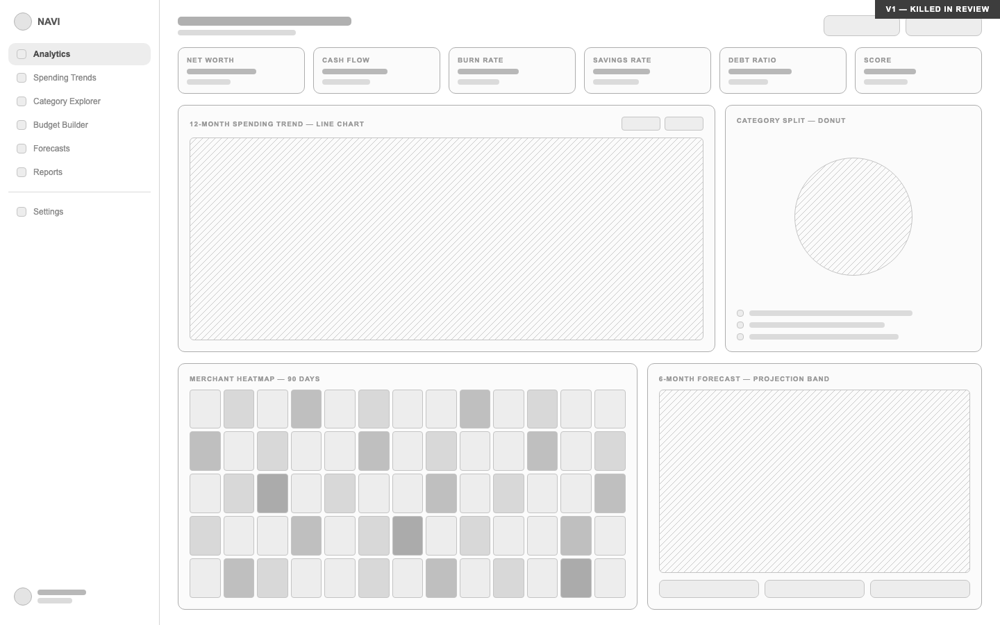
Six KPI tiles. A 12-month trend line. A category donut. A merchant heatmap. A forecast band. It looked like a serious analytics product, and I was proud of it for about a week. Two things killed it:
It couldn't survive Slack
Block Kit doesn't allow custom charts, caps you at three actions, and it's text-first. Every panel on this screen assumed a canvas the primary surface just doesn't have. If the dashboard's whole value was in its charts, the embedded version would always be the weaker sibling, which is backwards when embedded is supposed to be the point.
The research had already voted against it
Insight 03 was "proactive beats reactive": people wanted to be told when something needed attention, not to go exploring. This screen is a machine for exploring. It asks the user to do the analysis NAVI was supposed to do for them.
What replaced it: one paycheck banner, one insight card with an action, one spending list. The final dashboard tells you what NAVI found. This one asked you to go find it yourself.
From lo-fi to final, web and mobile.
The dashboard shows the clearest progression on both surfaces. Paycheck-first layout and the proactive AI banner were locked in at the wireframe stage and never changed. Only the visual system got layered on top later.
Web dashboard
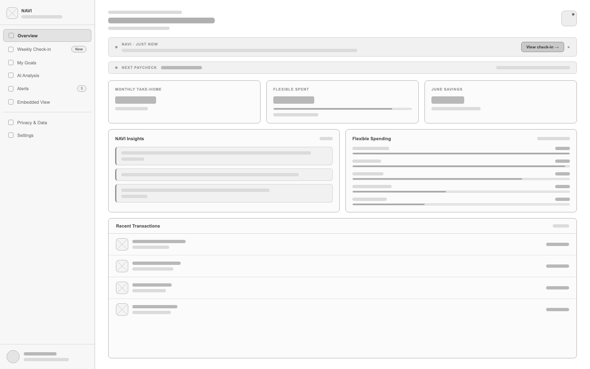
Paycheck card anchors the top. AI insight banner immediately below. Flexible spending breakdown right. Structure proven in the wireframe before final pixels.
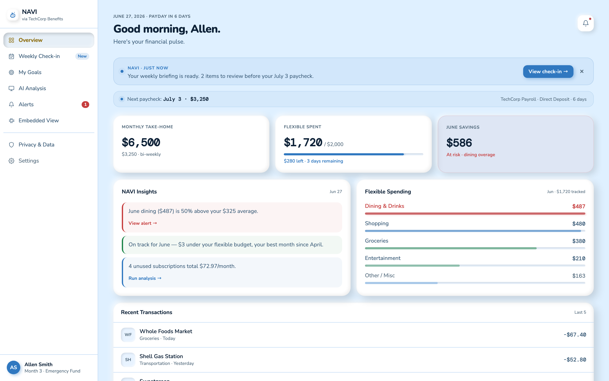
Claymorphism applied. Warm sky-blue background, soft clay card shadows, gold accent on the NAVI ANALYSIS badge. Layout identical to the wireframe, because the structure was already right.
Mobile dashboard
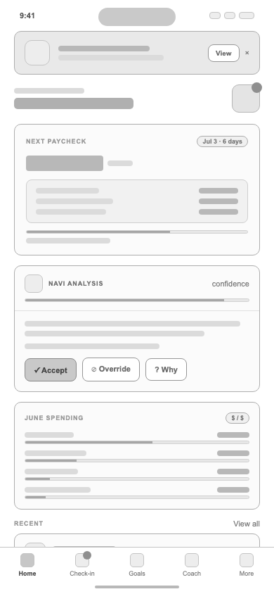
Same paycheck-first hierarchy, forced into a single column with no sidebar. NAVI ANALYSIS card sits directly below, not buried in a feed.

Same visual system, pocket-sized. Bottom nav replaces the sidebar; cards stack instead of sitting side by side. Structure held from wireframe to final.
Every numbered dot is an interview finding.
Research isn't a separate section tacked onto this product, it's load-bearing. These are the two screens where the interviews shaped the most pixels, each one annotated with the specific finding behind it.
The briefing banner speaks first. Insight 03: "if it just pinged me when I was off track, I'd trust it more than any dashboard." NAVI opens the conversation; the user never has to go looking.
Paycheck is the anchor, not net worth. Every employee interviewed oriented their financial thinking around the next pay date, not a balance. The paycheck strip sits above everything else on the page.
Insights outrank transactions. In the killed v1 this space was a trend chart. Interviews said users don't want to analyze, so NAVI's conclusions got the prime slot and raw transactions moved below the fold.
An at-risk number is tied to a goal, not just flagged. Participants ignored generic warnings but reacted to consequences. "June savings at risk" links the overage directly to the emergency-fund timeline.

Confidence percentage on every answer. Participants rated recommendations as more trustworthy when a confidence score was visible, even when the score was only 74%. Hiding uncertainty reads as hiding something.
The math is shown receipt-style. "Like a report from a trusted system." The answer includes checking balance, rent due, and the resulting number, so the user can audit the reasoning instead of taking NAVI's word.
Suggested prompts kill the blank page. The wireframe phase surfaced "what do I even ask?" anxiety. Ready-made follow-ups mean the coach never presents an empty input field as the only path forward.
Eight screens. One visual language.
The full standalone portal, onboarding through privacy controls. The claymorphism system holds across every screen: same shadow formula, same card radius, same palette. It reads as warm and trustworthy before NAVI says a single word.
The app shell, six screens, one sidebar
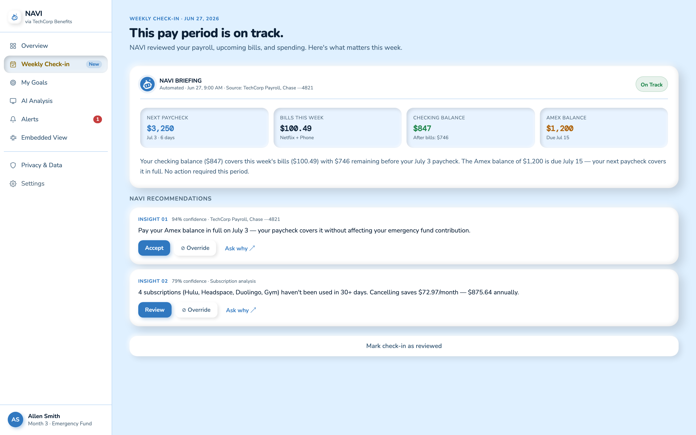
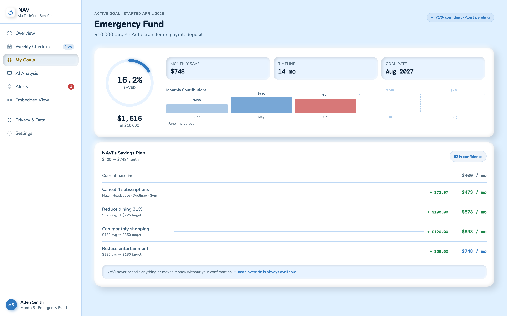
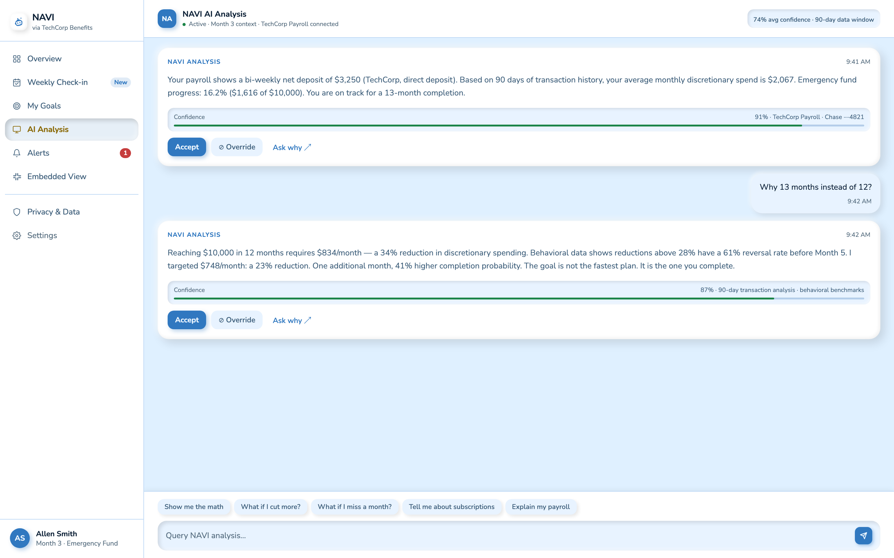
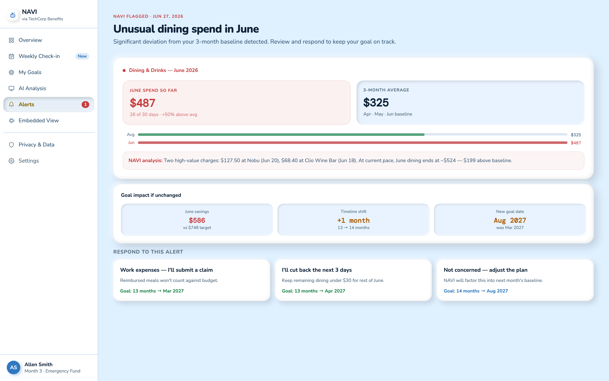
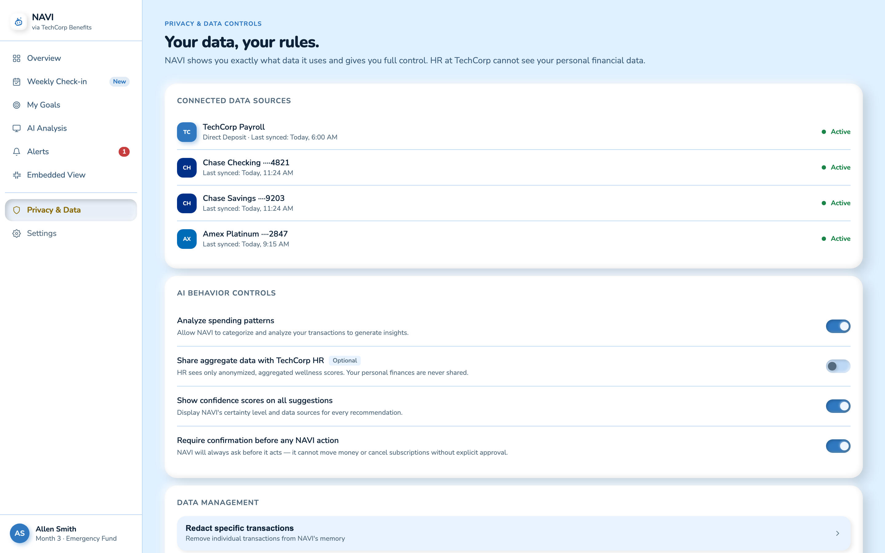
Two surfaces that intentionally break the shell
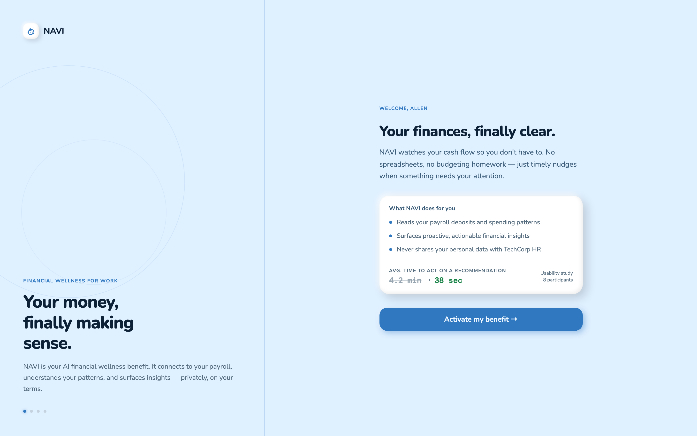
No sidebar. The user hasn't onboarded yet, so there's nothing to navigate to. Split-screen brand panel establishes trust before requesting payroll access.
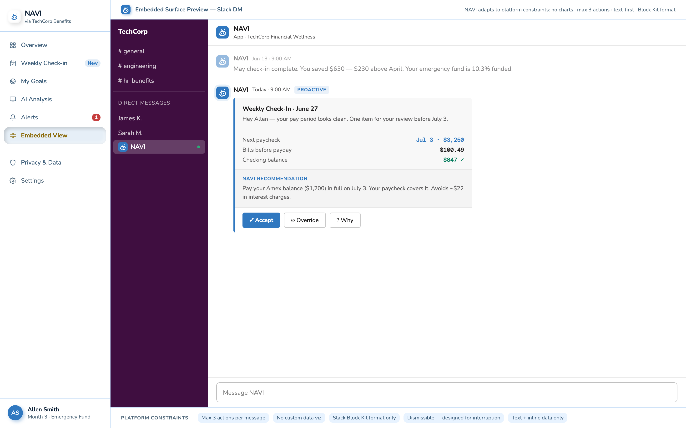
Nested inside a simulated Slack DM, not the standalone app shell. This is NAVI living where the research said people actually spend their time.
Four screens. Same claymorphism, pocket-sized.
The mobile version uses the same visual language (soft clay surfaces, sky-blue background, Nunito + DM Mono type) squeezed into a single-viewport phone screen. Bottom nav replaces the sidebar, and cards stack instead of sitting side by side.


One flow, narrated: from anomaly to action.
This is the flow the whole product is built around, recorded from the live prototype. Allen's June dining spend runs 50% over average. Watch how NAVI turns that from a passive red number into a decision he can make in under a minute, with the goal impact spelled out and a human override at every step.
The hardest constraint was also the most clarifying one: designing for Slack's Block Kit format forced NAVI to say only what mattered. No charts, no dashboards, just one sentence, one number, three buttons. Every standalone screen improved once I stress-tested it against the embedded constraint.
Design reflection · NAVI embedded-first approach
Faster decisions, higher trust, real adoption intent.
Usability study with 8 participants simulating onboarding and two recommendation flows. The clearest result: time to act on a NAVI recommendation dropped from the 4.2-minute benchmark for comparable finance apps to 38 seconds. The design didn't just make the product look more trustworthy. It made acting on it feel effortless.
Trust score averaged 4.4 out of 5. Participants consistently cited the confidence percentages and data source citations as the reason they trusted the output. Seven of eight said they would use NAVI if their employer offered it as a benefit.
What I'd do differently.
I'd run the Slack embedded surface through actual user testing earlier. I used it as a design pressure valve throughout the process, but testing it with real users (not just designers) would have surfaced edge cases in the Block Kit format I only caught late in the prototype phase.
The 13-month plan detail is a strong behavioral UX insight, but it's currently buried in the My Goals screen. It deserves a dedicated moment during onboarding: a short explanation of why the odd timeline is intentional. Users who understood it trusted NAVI more; users who didn't asked if it was a bug.
I'd add a second usability round focused specifically on the override flow. The first round showed people trusted NAVI enough to accept most recommendations, which is good, but I want to test the override path under realistic pressure: a recommendation that feels wrong, or one that contradicts a user's own instinct. That's where the design's trust architecture gets its hardest test.
Full process archive: sketch notes, digital wireframes, and the 23-screen board
Paper first. Four screens that defined the architecture.
Before any pixels, I sketched the four screens that carried the most structural risk: onboarding, the dashboard, the Slack embedded surface, and the alerts flow. Each sketch answered a specific layout question before committing to digital.
Split-screen onboarding
Brand promise on the left ("Your money, finally making sense.") and activation steps on the right. The goal: employees see why NAVI exists before being asked to connect their payroll. Trust is established before data is requested.
Paycheck-anchored dashboard
Paycheck data sits above everything, because the paycheck is NAVI's primary data source and the thing employees check first. Proactive AI insight card floats as a banner, never buried in a feed. The layout communicates: NAVI already knows what's happening.
Alert with goal impact
An anomaly isn't just flagged, it's connected to the user's goal. "Your dining spend is 50% above average. If unchanged, your emergency fund timeline shifts by one month." Three resolution paths replace a single dismiss button: the user stays in control of what happens next.
Slack Block Kit simulation
The embedded surface sketch was the most constrained: max 3 actions, no custom charts, text-first. Every feature that couldn't survive Block Kit was either cut or simplified. This sketch became the pressure valve for the entire web design: if it didn't work here, it didn't work anywhere.
Digital wireframes locked in structure. Constraints sharpened the design.
Moving from paper to digital, I tested every screen's layout against the Slack Block Kit constraint. If a feature needed a chart or more than three buttons in the embedded view, it got redesigned. That killed off a few dashboard ideas that looked smart on paper but couldn't survive the simplest version of the surface. This is also where the NAVI ANALYSIS card pattern showed up: confidence percentage, data source citation, mandatory override button. One of the decisions the whole product hangs on.
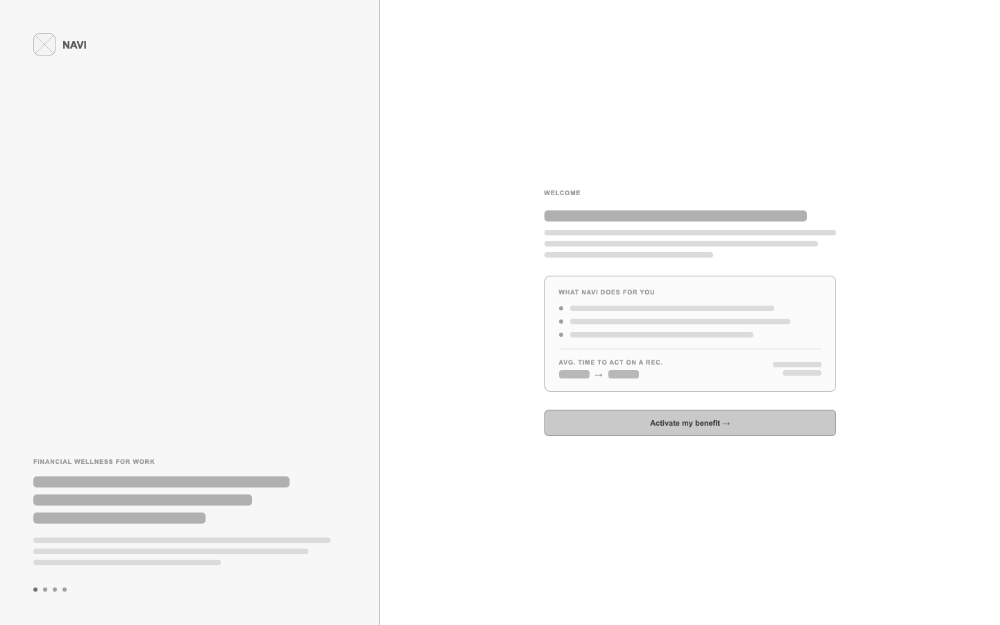
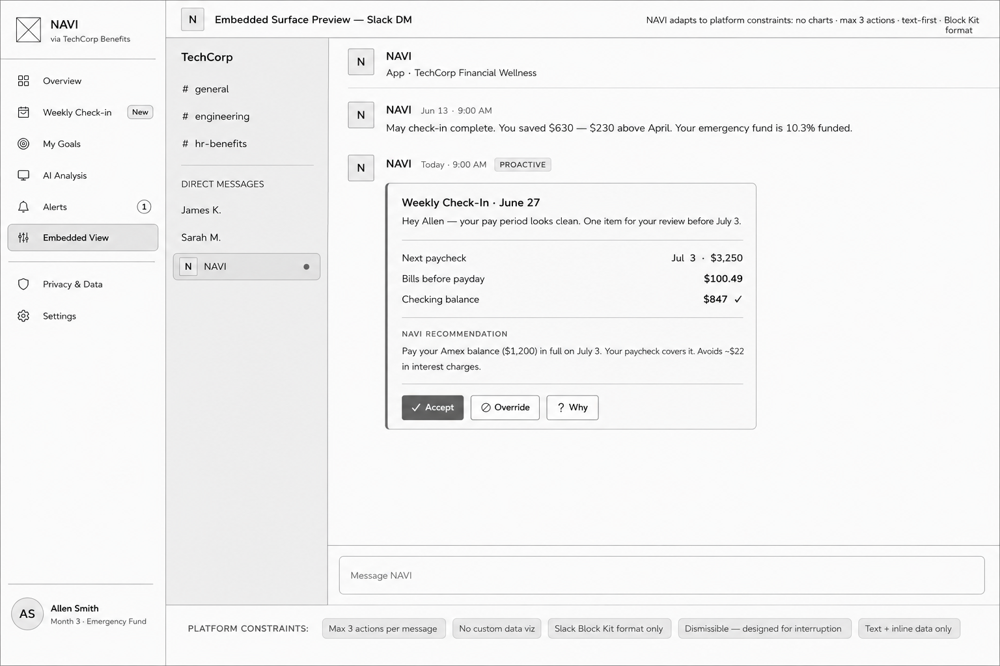
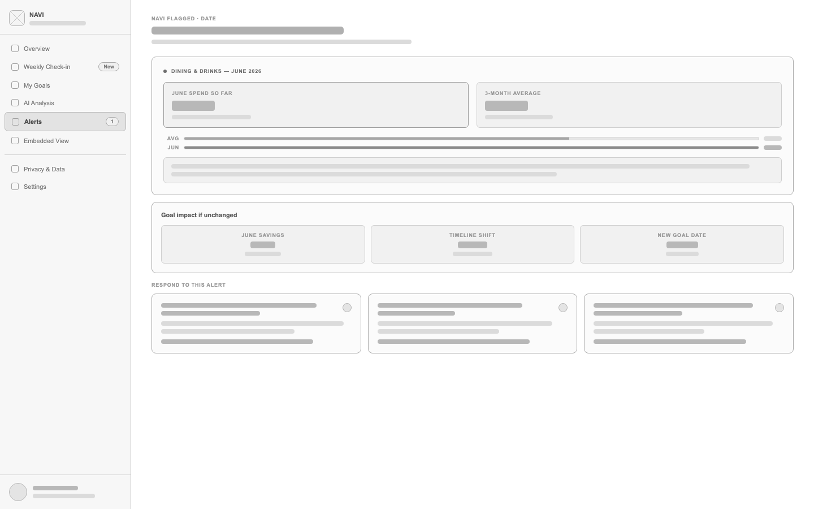
Mobile constraints made the design sharper.
The mobile surface forced every screen to survive on a single viewport with no sidebar. Bottom navigation with five tabs. Each screen had one primary job. The sketches show how structure was worked out before any visual system was applied.
Single-screen onboarding
No split screen, the phone can't afford it. Logo, bold headline, three benefit bullets, usability stat, and one full-width CTA. Pagination dots below suggest there are more steps. The user sees confidence before they're asked to connect their paycheck.
Paycheck-first home screen
One primary card: next paycheck, key financial stats, progress toward savings goal. The NAVI ANALYSIS card appears directly below, not in a feed, not buried, immediately actionable. Bottom nav labels confirm which tab is active; annotations explain every layout choice.
Goals as a living plan
Progress ring at top: the emotional anchor. NAVI PLAN card below it showing the 13-month timeline with three key figures. Next Actions list surfaces pending, completed, and queued steps. The screen tells you where you are and exactly what to do next.
Coach as a structured conversation
Not a chatbot. A coach. The NAVI ANALYSIS card carries a confidence score and shows exactly what data it used. Quick suggestion prompts below the response reduce the blank-page anxiety of "what do I even ask?" Annotations on the sketch show every component's role.
Digital wireframes, single column. The phone forced the priority order.
With no sidebar to split against, every screen had to declare its priority order top-to-bottom. The digital pass confirmed which pieces from the sketches were load-bearing and which were paper-only ideas that didn't survive a 390px viewport.
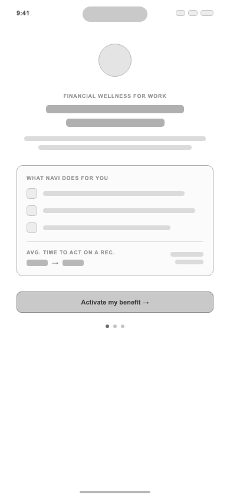
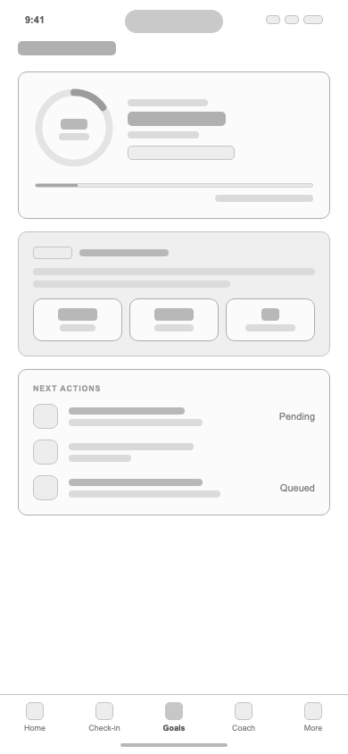
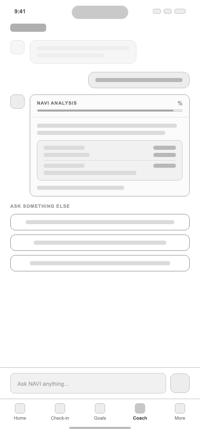
All 23 screens, one flow.
Every desktop and mobile lo-fi screen laid out in sequence, from welcome through privacy & data. Seeing the full board together is what surfaced gaps a single-screen view would have hidden. Click to zoom in on any screen.